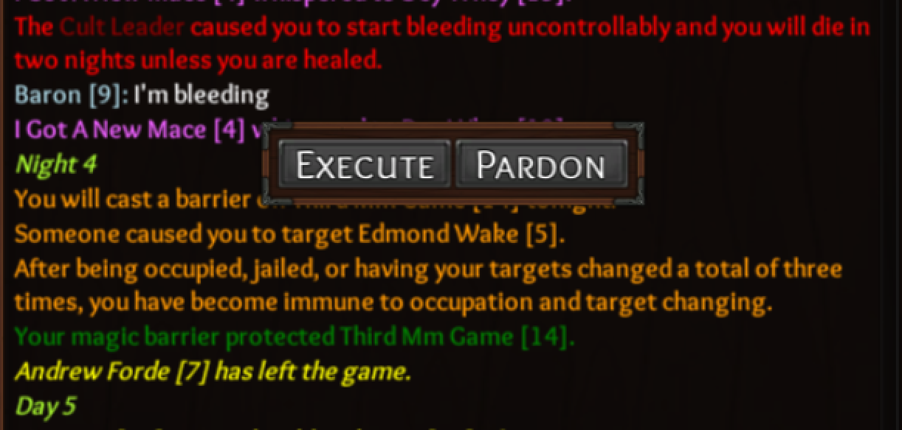

Ok so, I was Court Wizard, and I first barriered 13, and was redirected to 7, but I still successfully protected 13.

And then the same thing happened later when I barriered 14, got redirected to 5, but still successfully protected 14.

Steps to reproduce:
- Be a Court Wizard
- Choose to Barrier someone
- Get Redirected by Drunk, Court Wizard, Sage, Ritualist, etc.
- Have your original target be effected by a negative effect
- Successfully protect your OG target